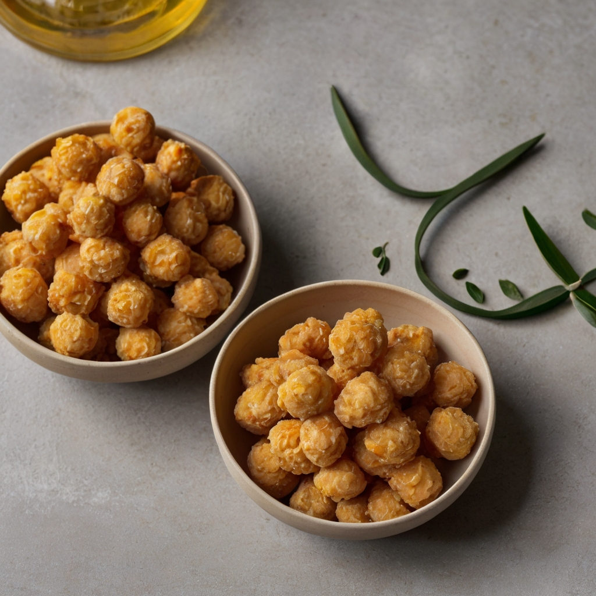
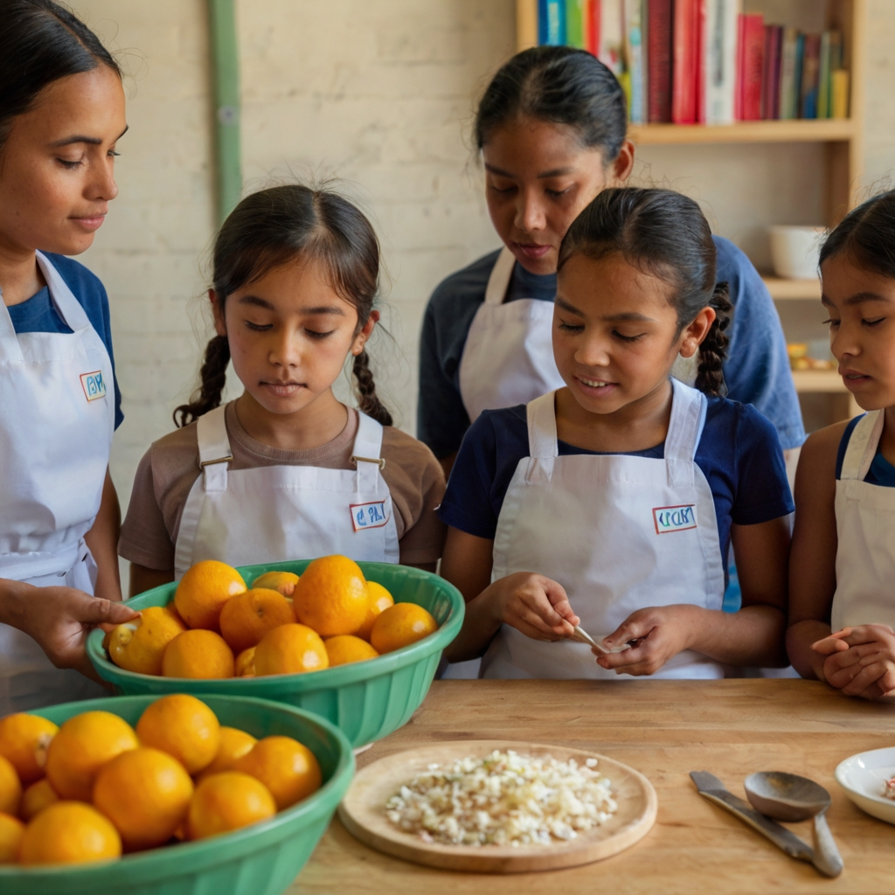
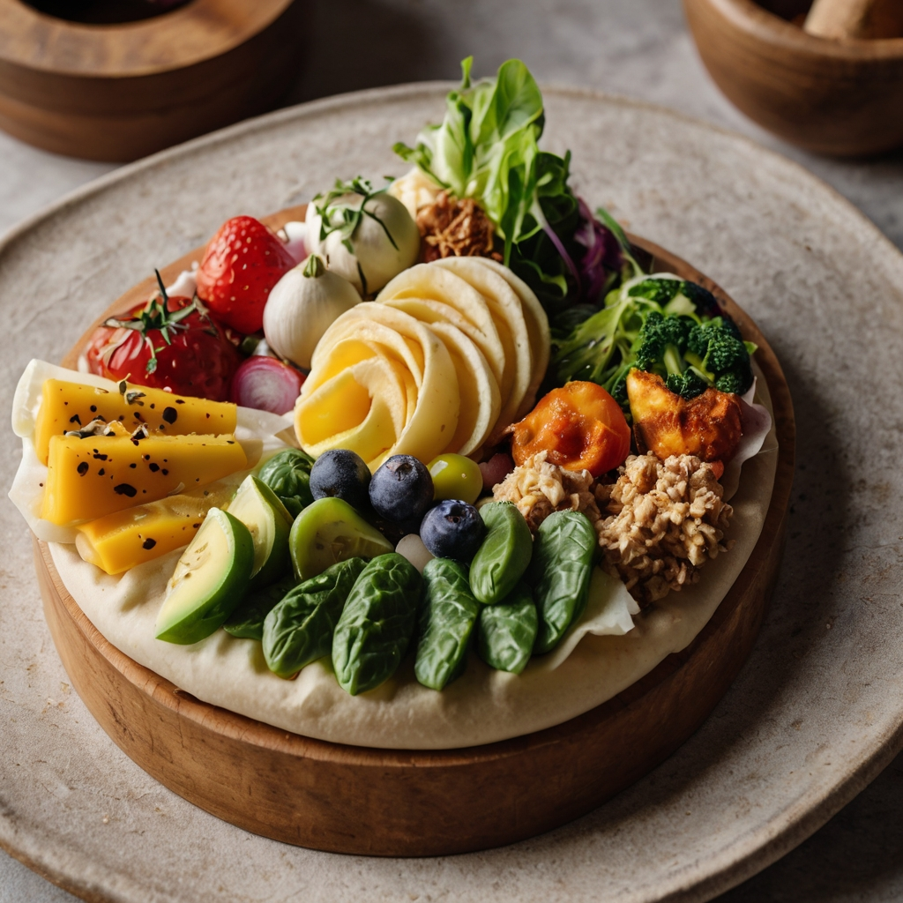
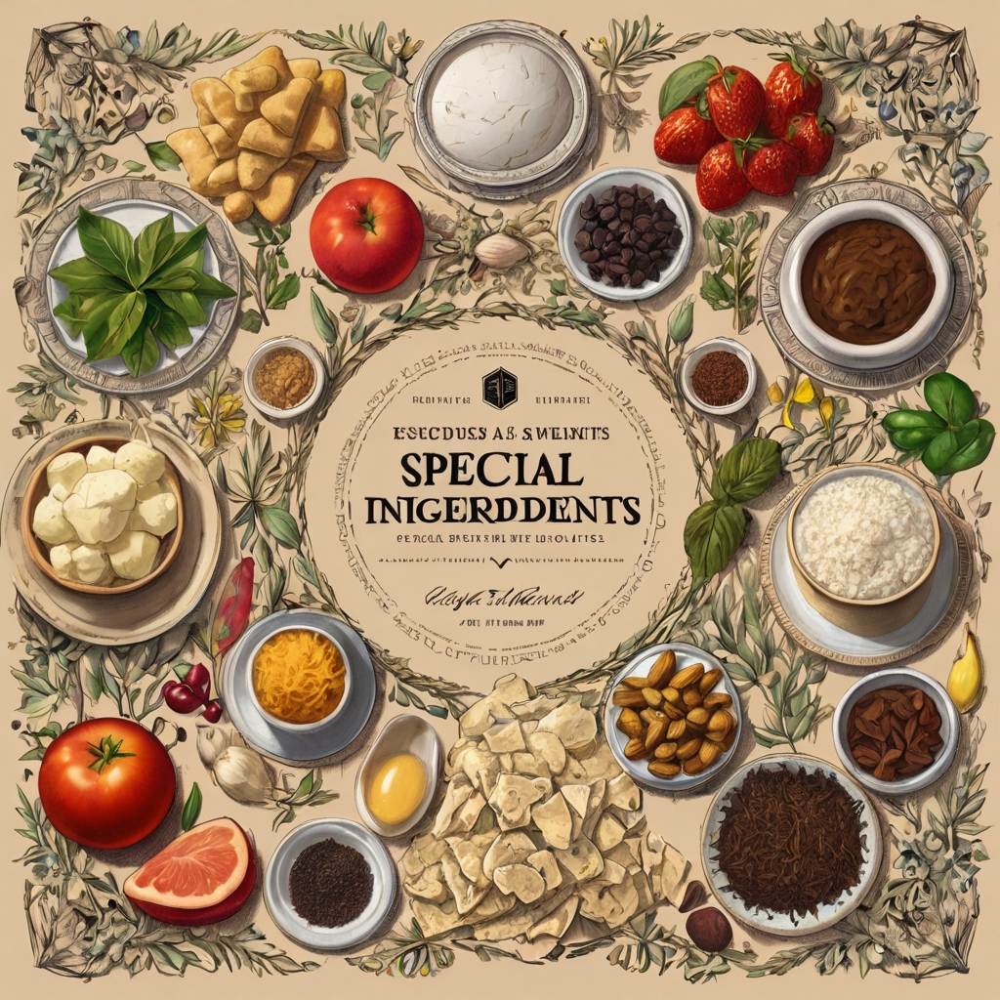

Tradições e Técnicas Artesanais
Fermentação

A fermentação é uma técnica antiga usada para preservar alimentos e aumentar seu valor nutricional. No campo, é comum encontrar receitas de chucrute, kimchi, picles e outros alimentos fermentados. Na gastronomia urbana, esses produtos estão ganhando espaço não só por seus sabores únicos, mas também por seus benefícios à saúde, como a melhora na digestão e o fortalecimento do sistema imunológico.
Mercados de produtores locais

Conservas e Compotas No campo, a prática de fazer conservas e compotas é uma maneira de aproveitar ao máximo a colheita e garantir a disponibilidade de frutas e vegetais durante todo o ano. Nas cidades, essa tradição tem sido adotada por aqueles que desejam capturar os sabores da estação em potes de geleias, chutneys, picles e outras delícias. Esses produtos não só adicionam variedade às refeições, mas também são uma forma de evitar o desperdício de alimentos.
Gastronomia sustentável

Queijos ArtesanaisA produção de queijos artesanais é uma prática comum em muitas regiões rurais, onde o leite fresco é transformado em queijos de sabores únicos e texturas variadas. Na gastronomia urbana, esses queijos são valorizados por sua qualidade e diversidade. Feitos em pequenas fazendas com métodos tradicionais, os queijos artesanais oferecem uma experiência gastronômica autêntica que conecta os consumidores à origem do alimento.
Resgate de sabores tradicionais
A preocupação com a sustentabilidade ambiental também é um reflexo da influência do campo na gastronomia urbana. Restaurantes e chefs têm adotado práticas como o "farm-to-table" (da fazenda para a mesa), onde há uma ênfase em utilizar ingredientes cultivados localmente e de forma sustentável. Além disso, a redução do desperdício de alimentos tornou-se uma prioridade, com muitos estabelecimentos aproveitando integralmente os ingredientes, desde a raiz até as folhas.
Educação e consciência alimentar
O campo é uma fonte rica de tradições culinárias que muitas vezes se perdem nas grandes cidades. A redescoberta de receitas e métodos de preparo ancestrais tem revitalizado a gastronomia urbana, trazendo à tona sabores únicos e valorizando a herança cultural de diversas regiões. Pratos típicos do interior, como a canjica, o cuscuz e a pamonha, ganham novas releituras e espaço nos cardápios urbanos.
Ingredientes exclusivos e especiais
A conexão entre campo e cidade também se reflete na crescente educação e conscientização alimentar. Workshops, feiras gastronômicas e visitas a fazendas estão se tornando populares, proporcionando aos moradores urbanos uma oportunidade de aprender sobre a origem dos alimentos e a importância de práticas agrícolas sustentáveis. Isso promove uma maior valorização do trabalho dos produtores rurais e incentiva escolhas de consumo mais conscientes.
Ingredientes exclusivos e especiais
O campo oferece uma gama de ingredientes exclusivos que muitas vezes não são encontrados nas áreas urbanas. Plantas aromáticas, flores comestíveis, variedades antigas de grãos e legumes, além de carnes de animais criados de forma extensiva, são apenas alguns exemplos. Esses ingredientes especiais permitem que chefs urbanos criem pratos inovadores e únicos, diferenciando-se no competitivo cenário gastronômico das grandes cidades.